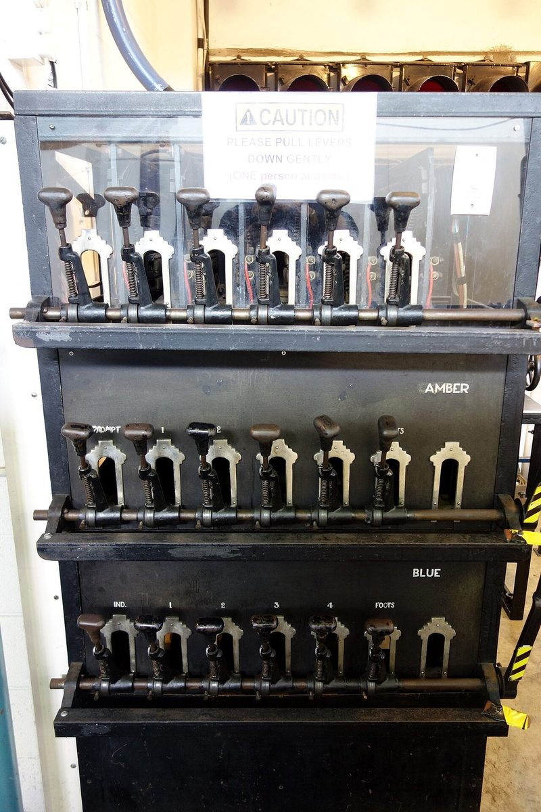
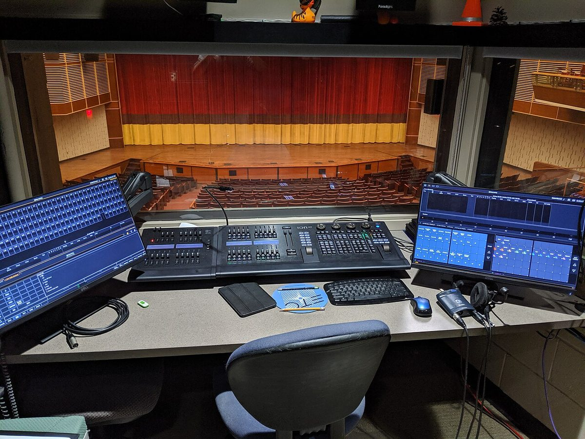

1 · The universe
One DMX line is a universe: 512 channels, numbered 1 to 512. Each channel is one number from 0 to 255, like a fader from off to full. A bigger show uses more universes, and each starts again at 1.
School musical production · Grades 8–12 · 45–60 minutes · Technical Elements
The lighting console in the booth talks to every light in the theatre down one data cable. That cable carries 512 numbered channels, over and over, about 44 times a second. Each light listens to its own block of numbers and ignores the rest. Getting those numbers right is called patching, and it is the job that decides whether opening night’s first cue works.
This is the Act I rig for the same rocky-shore set as the Stage Plotting ground plan and the Cue Sheets prompt book. Every row is one fixture. Change a type, mode or address and watch the universe map. New to DMX? Read Three numbers run every light just below first.
| # | Fixture | Type | Mode | Univ. | Address | Uses | Status and remove |
|---|
Your patch saves on this browser and device.
One DMX line is a universe: 512 channels, numbered 1 to 512. Each channel is one number from 0 to 255, like a fader from off to full. A bigger show uses more universes, and each starts again at 1.
A plain light on a dimmer needs 1 channel: brightness. An LED wash needs one for each colour, so 3 to 8. A moving light needs one for pan, tilt, colour, gobo, focus and more: 12 to 16 or beyond. That count is the fixture’s footprint, and it changes with the mode you set on the fixture.
You set each fixture’s start address, its first channel. It then takes that channel and the next footprint − 1. Start + footprint is the next free address. If two fixtures claim the same channel, fading one makes the other flicker, swing or change colour.
26. It uses 21, 22, 23, 24 and 25. Start + footprint = 21 + 5 = 26. A common mistake is 25, which is the wash’s own last channel.
Fixtures with a screen let you type the address. Older and cheaper ones use a row of tiny DIP switches. Switch 1 is worth 1, switch 2 is worth 2, then 4, 8, 16, 32, 64, 128 and 256. Add up the switches that are ON. That is base 2, the same place value a computer uses. Nine switches reach 1 + 2 + … + 256 = 511.
DMX travels from the console’s DMX OUT into the first fixture’s IN, out of its THRU, into the next, and so on: a daisy chain. Every fixture hears the whole universe and picks out its own channels. Build a line and see what the electrician would say.
DMX sends 250,000 bits a second. Each channel takes 11 bits (a start bit, 8 data bits, 2 stop bits), so 44 µs. A packet is a break (the “start of packet” signal), a short mark, a start code, then every channel in order.
Every one of these happens in school theatres. Read the symptom and predict the cause before you open it.
Overlapping addresses. SR is a 5-channel wash at 21 (21–25). SL was set to 24, so SL’s Dimmer and Red are SR’s Blue and White channels. Move SL to 26. Load the rushed load-in above and look for the red cells.
Overlap again, with a moving light. Mover 1 uses 101–116 in its 16-channel mode. Mover 2 was set to 110, so Mover 1’s colour wheel channel is Mover 2’s Tilt. Movers that jump are a safety problem: stop and fix the patch before anyone stands under them.
Wrong mode. The console expects 16 channels but the fixture is set to 12-channel mode, so every channel after the first few means something else. Check the mode on the fixture’s menu matches the profile in the console.
No terminator, or microphone cable. The signal reflects off the open end of the line. Plug a 120 Ω terminator into the last THRU, and swap any mic cable for DMX cable.
The new pipe was fed with a Y-cable, or it is on universe 2 and the console only outputs universe 1. Use an opto-splitter for branches, and check which universe each output port sends.
A hundred years ago a big cue needed several people moving levers together. DMX512 (first published in 1986) let one console command every dimmer down a single cable. Click a photo to enlarge it.


The electricians tape this to the booth wall and carry it up the ladder at focus call. It updates as you patch.
| # | Fixture | Type · mode | Universe | Address | Channels | DIP switches ON |
|---|
Further reading: Wikipedia: DMX512 and the standard itself, ANSI E1.11, free from ESTA’s Technical Standards Program. Fixture modes here are simplified examples; always use the manufacturer’s chart for your real fixtures. Never stand or work under a moving light that is behaving unpredictably.